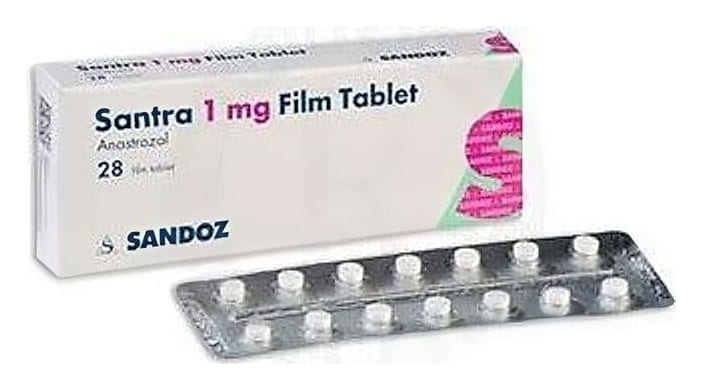

Santra 1 mg Film Kaplı Tablet, 28 Adet

Ne için kullanılır
KT · Bölüm 1SANTRA beyaz renkli, yuvarlak, çentiksiz bikonveks ve bir tarafında “A1” yazılı film kaplı tablettir. SANTRA’nın etkin maddesi anastrozol’dür. SANTRA, aromataz inhibitörleri olarak adlandırılan ilaç grubuna dahildir. Bu ilaç vücutta bulunan bir enzim olan aromatazın etkilerini engeller. Aromataz enzimi menopoza girmiş olan kadınlarda böbrek üstü bezinden östrojen adlı kadınlık hormonunun üretilmesini sağlamaktadır. Bu kadınlık hormonları meme kanseri üzerinde uyarıcı etki göstermektedir. SANTRA, aromataz enziminin etkisini engelleyerek menopoz sonrasındaki kadınlık hormonu üretimini azaltır. SANTRA, menopoz sonrası kadınlarda meme kanserinin tedavisinde kullanılır. SANTRA, 28 film kaplı tablet içeren blisterlerde ambalajlanmıştır.